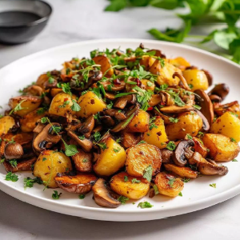

Ingredients
Roasted Potatoes⠀
- 1½ lb yellow or red baby potatoes⠀
- olive oil (just enough to coat)⠀
- large pinch of ground black pepper⠀
- ¼ tsp salt⠀
- ½ tsp dried oregano⠀
- ½ tsp lemon juice⠀
- 1 tsp dried thyme⠀
- 2 cloves garlic, minced
Roasted Mushrooms
- 2 pounds (900g) button or cremini mushrooms, washed, trimmed, and quartered⠀
- 1/4 cup (60ml) extra-virgin olive oil⠀
- Kosher salt and freshly ground black pepper⠀
- 8 to 12 sprigs thyme or rosemary⠀
- 2 tablespoons chopped parsley, chives, tarragon, or other fresh herbs
Instructions
Roasted Potatoes
- Preheat oven to 425°F. Wash potatoes and cut into halves.⠀Place in a bowl, toss with salt, thyme,
garlic, lemon juice, oregano and pepper.⠀
- Bake for 25 minutes on a baking sheet lined with parchment paper.⠀Remove from oven, rearrange
potatoes and bake for another 5-10 minutes, until they're golden brown and crispy.
Roasted Mushrooms
- Adjust oven rack to center position and preheat oven to 375°F. Toss mushrooms with olive oil and
season with salt and pepper. Transfer to a foil-lined rimmed baking sheet and spread into an even
layer. Spread thyme or rosemary sprigs on top of mushrooms. Transfer to oven and roast until
mushrooms release liquid, about 15 minutes.⠀
- Return mushrooms to oven and continue roasting until browned but still tender, about 30 minutes
longer. Discard thyme or rosemary. Transfer to a bowl and toss with parsley, chives, or tarragon.
Serve with potatoes and avacado.
Source Here